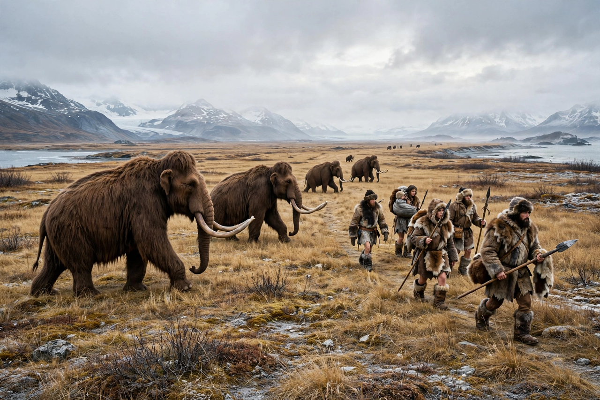

| Beringia | |
|---|---|
| Region | Eastern Siberia to the Mackenzie River, Canada |
| Existed | During glacial low sea levels; last exposed until ~11,000 years ago |
| Maximum extent | Up to 1,000 km north–south at the Last Glacial Maximum |
| Vegetation | Mammoth steppe (grassland–shrubland) |
| Significance | Route of human migration into the Americas |

Beringia is the region surrounding the Bering Strait — the Chukchi Sea and Bering Sea — during periods of low sea level, when a broad landmass connected Siberia and Alaska. At its maximum during the Last Glacial Maximum, Beringia stretched from the Lena River in Siberia east to the Mackenzie River in Canada, and extended as much as 1,000 kilometres from north to south across what is now the shallow floor of the Bering and Chukchi seas. It was not an ice-covered corridor but a cold, dry grassland that supported herds of megafauna — and the human populations whose descendants are the Indigenous peoples of the Americas.
Because global sea level fell by roughly 120 metres at glacial maxima, the extremely shallow Bering Strait (modern depth ~50 metres) and the shelves around it were exposed as dry land for tens of thousands of years. Central Beringia, the plain now beneath the strait, formed the connection between western Beringia (northeastern Siberia) and eastern Beringia (Alaska and Yukon). The region remained largely free of ice sheets because of its aridity, even while the Laurentide and Cordilleran ice sheets covered much of North America to the east.
Beringia's ecosystem was the mammoth steppe: a productive mosaic of grasses, sedges and shrubs that supported woolly mammoths, steppe bison, horses, caribou, musk oxen, and predators including lions, short-faced bears and wolves. Pollen and macrofossil evidence shows shrubs such as birch and willow persisted in sheltered areas, providing fuel and food. As the climate warmed at the end of the Pleistocene, the steppe gave way to wetter tundra and peatland, and rising seas flooded central Beringia by about 11,000 years ago, forming the modern strait.
Genetic and archaeological evidence indicates that the ancestors of Native Americans diverged from Siberian populations and spent several thousand years — the "Beringian standstill" — in or near Beringia before spreading into the Americas as the ice sheets retreated, at least 15,000 years ago and possibly earlier. Sites such as Alaska's Upward Sun River, where the remains of two infants about 11,500 years old defined an "Ancient Beringian" population, illuminate this history. The term "Beringia" itself was coined by Swedish botanist Eric Hultén in 1937 to explain shared Arctic plant distributions.